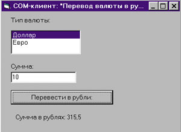
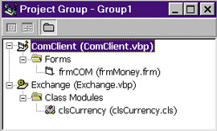
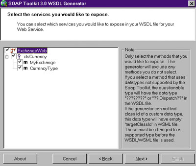

Андрей Колесов
В этой статье мы на простом примере покажем возможность использования существующих локальных COM-компонентов, реализованных в виде ActiveX DLL, в распределенных многоплатформных системах, построенных на базе архитектуры Web Services (обзор этой Интернет-технологии можно найти в трех статьях, опубликованных в "BYTE/Россия" № 9/2001). Преобразовывать COM-объекты в Web-сервисы мы будем с помощью инструментального набора Microsoft SOAP Toolkit 3.0, выпущенного летом нынешнего года. Для воспроизведения программного примера понадобится: Microsoft VB 6.0, Internet Information Server (для Windows NT/2000/XP) или Personal Web Server (для Windows 9x), а также Microsoft SOAP Toolkit 3.0 (его можно загрузить по адресу http://msdn/microsoft.com/soap). Все программные проекты (исходные коды и исполняемые модули) можно найти по адресу http://www.visual.2000.ru/develop/vb/source/com_soap.zip.
В традиционной схеме клиент взаимодействует с внешним программным компонентом через локальный механизм COM. В новом варианте COM-объект как бы помещается в оболочку Web Services, работа с которой выполняется через универсальные, открытые и платформно-независимые Интернет-протоколы - SOAP (Simple Object Access Protocol), WSDL (Web Services Description Language) и WSML (Web Services Meta Language). Разумеется, новый Web-сервис сможет работать только на серверной платформе Windows, но клиенты уже никак не зависят от операционной среды. Кроме того, серверный компонент может менять свое физическое местонахождение - механизм WSDL должен его автоматически отслеживать и обеспечивать устойчивую связь между клиентом и сервером.
Преобразование COM-объекта в Web-сервис выполняется с помощью мастера SOAP Toolkit 3.0 WSDL Generator без написания программного кода. Клиентское приложение приходится модернизировать вручную, но, как мы покажем ниже, это требует минимальных усилий.
Создание и тестирование COM-объекта
Для реализации проекта мы будем использовать VB 6.0. Создайте новый проект ActiveX DLL и назовите его Exchange. По названию можно догадаться, что мы будем решать очень модную ныне задачу пересчета иностранной валюты в рубли. Наш вариант будет реализован в виде такого программного кода в модуле класса (мы его назвали clsCurrency):
Option Explicit
Dim CurrType(2) As String
Public Function CurrencyType(iCurr) As String
' возвращаем название валюты по ее номеру
If iCurr > 2 Then
CurrencyType = ""
Else:
CurrencyType = CurrType(iCurr)
End If
End Function
Private Sub Class_Initialize()
CurrType(1) = "Доллар"
CurrType(2) = "Евро"
End Sub
Public Function MyExchange(Summa As Single, MyCurrType As String)
' перевод валюты в рубли
Dim Curs As Single
Select Case MyCurrType
Case CurrType(1)
Curs = 31.55
Case CurrType(2)
Curs = 30.45
Case Else
Curs = 0
End Select
MyExchange = Summa * Curs
End Function
|
Здесь описаны две функции: CurrencyType возвращает клиенту названия валют, поддерживаемых нашим объектом, MyExchange выполняет пересчет полученной суммы в соответствии с заданным именем валюты.
Для тестирования COM-объекта напишем также клиентское приложение ComClient, внешний интерфейс которого показан на рис. 1, а весь программный код приведен ниже:
|  | Рис. 1. Визуальный интерфейс клиентского приложения.
|
Dim oCurrClient As Exchange.clsCurrency
Private Sub cmdExchange_Click()
' выполнение преобразования
Dim Summa As Single
Dim CurrType As String
Summa = Val(txtCurrency.Text)
CurrType = lstCurrency.List(lstCurrency.ListIndex)
CurrType = lstCurrency.List(lstCurrency.ListIndex)
lblRubles.Caption = "Сумма в рублях: " & _
oCurrClient.MyExchange(Summa, CurrType)
End Sub
Private Sub Form_Load()
Set oCurrClient = New Exchange.clsCurrency
' формирование списка валюты
Dim i&, CurrName$
i = 0
Do
i = i + 1
CurrName = oCurrClient.CurrencyType(i)
If CurrName = "" Then Exit Do
lstCurrency.AddItem CurrName
Loop
lstCurrency.ListIndex = 0
End Sub
|
Напомним, что в VB 6.0 для отладки подобных "клиент-серверных" приложений можно использовать вариант "группы" (рис. 2). Но в этом случае связь с тестируемым COM-объектом все равно нужно устанавливать вручную с помощью окна References. Запустите на выполнение проект ComClient и убедитесь, что приложение работает в соответствии с нашим простеньким алгоритмом пересчета валют. После этого создайте ActiveX DLL.
|  | Рис. 2. Отладка выполняется в режиме групповой загрузки клиентского и серверного проектов.
|
Преобразование COM-объекта с помощью SOAP Toolkit
Теперь запустите мастер SOAP Toolkit 3.0 WSDL Generator (после установки набора он должен появиться в меню "Программы"). Мастер проанализирует интерфейс заданной ActiveX DLL и сгенерирует необходимую программную оболочку в виде нескольких файлов с одинаковым базовым именем, но различающихся расширениями - WSDL, WSML и ASP. Вся операция будет выполнена в виде последовательного заполнения шести диалоговых окон (не считая начального окна-приветствия).
Шаг 1. Здесь можно загрузить уже существующую конфигурацию. Это новая возможность Toolkit 3.0, с помощью которой можно редактировать параметры ранее обработанных компонентов. Мы ее в данном случае не задействуем.
Шаг 2. Укажите имя создаваемого Web-сервиса и путь к используемой DLL. Имя Web-сервиса (в нашем случае ExchangeWeb) будет присвоено всем создаваемым файлам.
Шаг 3. Укажите сервисы, которые вы будете использовать (рис. 3). Здесь вы увидите все доступные в DLL классы и их методы, функции и свойства. Для дальнейшей работы можно указать произвольный их набор.
|  | Рис. 3. Вы можете указать мастеру SOAP Toolkit, какие функции подключать к Web-сервису.
|
Шаг 4. Для описания характеристик SOAP-компонента (SOAP listener) введите URL области сервера. Мы использовали имя http://localhost/myexchangelisten/, но при желании можно применить любой IP- или Web-адрес. В этом же окне нужно указать тип создаваемого компонента - ASP или ISAPI. Как известно, ISAPI обеспечивает более высокую производительность, но мы выбрали ASP, чтобы при необходимости можно было посмотреть (и даже модифицировать) алгоритм работы компонента, реализованного на VBScript.
Шаг 5. Определите URL-ссылки, используемые в WSDL-файле. Сейчас не будем разбираться, зачем они нужны. Оставьте значения, предлагаемые по умолчанию.
Шаг 6. В последнем окне нужно указать тип кодировки (можно оставить предлагаемую UTF-8), а также имена каталогов для размещения создаваемых файлов.
На этом работа мастера закончилась. Прежде чем перейти к рассмотрению программных компонентов созданного Web-сервиса, взгляните на сформированный файл конфигурации ExchangeWeb.wgen, в котором зафиксированы все данные, введенные в процессе работы мастера (листинг 1).
Листинг 1. Содержимое файла конфигурации, сформированного в процессе работы мастера SOAP Toolkit 3.0 WSDL Generator<WSDLGenConfig WSDLGenVersion="3.0"
serviceName="ExchangeWeb"
COMObjectPath=
"d:\TMP\COM_WebS\MyTest\Exchange.dll"
listenerURI=
"http://localhost/myexchangelisten/"
listenerType="ASP"
XSDSchemaNS="2001"
definitionsTNS=
"http://tempuri.org/ExchangeWeb/wsdl/"
schemaTNS=
"http://tempuri.org/ExchangeWeb/type/"
soapBodyNS=
"http://tempuri.org/ExchangeWeb/message/"
soapActionURI=
"http://tempuri.org/ExchangeWeb/action/"
characterSet="UTF-8"
outputPath=
"d:\TMP\COM_WebS\MyTest\NewFiles">
<selectedInterfaces>
<interface name="clsCurrency">
<selectedMethods>
<method name="MyExchange">
</method>
<method name="CurrencyType">
</method>
</selectedMethods>
</interface>
</selectedInterfaces>
</WSDLGenConfig>
|
Посмотрим, что мы сделали
Давайте теперь взглянем на содержимое сформированных нами программных файлов. ASP-страница содержит код VBScript, который вызывает соответствующие методы нашего Web-сервиса (листинг 2). WSDL-файл представляет собой XML-определение, которое будут использовать клиенты, находящиеся вне вашей интрасети (листинг 3). Этот файл преобразует все программные обращения в элементы XML-сообщений, через которые идет взаимодействие клиентского приложения и Web-сервиса.
Листинг 2. Автоматически сформированная страница ASP, вызывающая методы Web-сервиса<%@ LANGUAGE=VBScript %>
<%
Option Explicit
On Error Resume Next
Response.ContentType = "text/xml"
Dim SoapServer
If Not Application _
("ExchangeWebInitialized") Then
Application.Lock
If Not Application _
("ExchangeWebInitialized") Then
Dim WSDLFilePath
Dim WSMLFilePath
WSDLFilePath = _
Server.MapPath("ExchangeWeb.wsdl")
WSMLFilePath = _
Server.MapPath("ExchangeWeb.wsml")
Set SoapServer = Server.CreateObject _
("MSSOAP.SoapServer30")
If Err Then SendFault _
"Cannot create SoapServer object. " _
& Err.Description
SoapServer.Init _
WSDLFilePath, WSMLFilePath
If Err Then SendFault _
"SoapServer.Init failed. " _
& Err.Description
Set Application("ExchangeWebServer") _
= SoapServer
Application("ExchangeWebInitialized") _
= True
End If
Application.UnLock
End If
Set SoapServer = _
Application("ExchangeWebServer")
SoapServer.SoapInvoke _
Request, Response, ""
If Err Then SendFault _
"SoapServer.SoapInvoke failed. " _
& Err.Description
Sub SendFault(ByVal LogMessage)
Dim Serializer
On Error Resume Next
' "URI Query" logging must
' be enabled for AppendToLog to work
Response.AppendToLog _
" SOAP ERROR: " & LogMessage
Set Serializer = Server.CreateObject _
("MSSOAP.SoapSerializer30")
If Err Then
Response.AppendToLog _
"Could not create SoapSerializer30" _
& " object. " & Err.Description
Response.Status = _
"500 Internal Server Error"
Else
Serializer.Init Response
If Err Then
Response.AppendToLog _
"SoapSerializer.Init failed. " _
& Err.Description
Response.Status = _
"500 Internal Server Error"
Else
Response.Status = _
"500 Internal Server Error"
Serializer.startEnvelope
Serializer.startBody
Serializer.startFault "Server", _
"The request could not be " & _
"processed due to a problem " & _
"in the server. Please contact " _
& "the system administrator. " _
& LogMessage
Serializer.endFault
Serializer.endBody
Serializer.endEnvelope
If Err Then
Response.AppendToLog _
"SoapSerializer failed. " _
& Err.Description
Response.Status = _
"500 Internal Server Error"
End If
End If
End If
Response.End
End Sub
%>
|
Листинг 3. WSDL-файл, обеспечивающий непосредственное взаимодействие клиента и Web-сервиса(приведен фрагмент файла, показана структура тегов) <?xml version='1.0' encoding='UTF-8' ?>
<definitions ...>
<types>
<schema …>
<import namespace=.../>
...
</schema>
</types>
<message
name='clsCurrency.CurrencyType'>
<part name='iCurr'
type='xsd:anyType'/>
</message>
<message name=
'clsCurrency.CurrencyTypeResponse'>
<part name='Result'
type='xsd:string'/>
<part name='iCurr'
type='xsd:anyType'/>
</message>
<message name='clsCurrency.MyExchange'>
<part name='Summa'
type='xsd:float'/>
<part name='MyCurrType'
type='xsd:string'/>
</message>
<message name=
'clsCurrency.MyExchangeResponse'>
<part name='Result'
type='xsd:anyType'/>
<part name='Summa'
type='xsd:float'/>
<part name='MyCurrType'
type='xsd:string'/>
</message>
<portType name='clsCurrencySoapPort'>
<operation name='CurrencyType'
parameterOrder='iCurr'>
<input message='wsdlns:clsCurrency.
CurrencyType'/>
<output message='wsdlns:clsCurrency.
CurrencyTypeResponse'/>
</operation>
...
</portType>
<binding name='clsCurrencySoapBinding'
type='wsdlns:clsCurrencySoapPort' >
<stk:binding preferredEncoding='UTF-8'/>
<soap:binding .../>
<operation name='CurrencyType'>
<soap:operation soapAction=.../>
<input>
<soap:body ... />
</input>
</operation>
...
</binding>
<service name='ExchangeWeb' >
</service>
</definitions>
|
В SOAP клиент отправляет к Web-сервису запрос-сообщение, которое содержит атрибут name, включающий имя класса и имя метода (например, name = 'clsCurrency.CurrencyType'). Когда сервер получает это сообщение, он выполняет нужные функции Web-сервиса и возвращает ответное сообщение клиенту. Обратите внимание, что в запросе передаются только параметры, а в ответе - параметры и значение функции. Кроме того, генератор Toolkit 3.0 преобразует типы заданных параметров в их эквивалент в SOAP (таблица). Если генератор не может определить такое соответствие, то заменяет имя параметра семью знаками вопроса. (Протокол SOAP не может передавать наборы данных ADO Recordset в качестве параметров. Но эту проблему довольно легко решить, написав конвертер, состоящий буквально из нескольких строк. Для этого нужно сохранить набор данных ADO в объекте ADO Stream с форматом XML. Потом этот объект нужно запомнить в строковой переменной, которая передается через SOAP клиенту, выполняющему обратное преобразование.)
Преобразование типов данных при работе мастера SOAP Toolkit 3.0
| SOAP | VB |
| base64Binary | Byte() |
| String | String |
| Boolean | Boolean |
| dateTime | Date |
| Complex type with any content | IXMLDOMNodeList |
| Decimal | Variant |
| Short | Integer |
| Int | Long |
| Int | Long |
| UnsignedInt | Long |
| Float | Single |
| Double | Double |
| anyType | Variant |
| ??????? | - |
Генератор формирует два WSML-файла. ExchangeWeb.wsml сервер использует для определения ProgID нужной DLL. Он содержит карты соединений для запросов из WSDL-файла к COM-интерфейсу (листинг 4). ExchangeWebClient.wsml содержит схемы преобразования сложных типов данных. Поскольку мы применяем только простые типы, этот файл фактически не нужен.
Листинг 4. WSML-файл, определяющий библиотеку ProgID Exchange DLL и содержащий карты соединений для запросов к COM-интерфейсу<?xml version='1.0' encoding='UTF-8' ?>
<!-- Generated 09/14/02 by
Microsoft SOAP Toolkit WSDL File Generator
Version 3.00.1325.0 -->
<servicemapping name='ExchangeWeb'
xmlns:dime='http://schemas.xmlsoap.org
/ws/2002/04/dime/wsdl/'>
<service name='ExchangeWeb'>
<using PROGID='Exchange.clsCurrency'
cachable='0' ID='clsCurrencyObject'/>
<port name='clsCurrencySoapPort'>
<operation name='CurrencyType'>
<execute uses='clsCurrencyObject'
method='CurrencyType'
dispID='1610809344'>
<parameter callIndex='-1'
name='retval'
elementName='Result' />
<parameter callIndex='1'
name='iCurr'
elementName='iCurr' />
</execute>
</operation>
<operation name='MyExchange'>
<execute uses='clsCurrencyObject'
method='MyExchange'
dispID='1610809346'>
<parameter callIndex='-1'
name='retval'
elementName='Result' />
<parameter callIndex='1'
name='Summa'
elementName='Summa' />
<parameter callIndex='2'
name='MyCurrType'
elementName='MyCurrType' />
</execute>
</operation>
</port>
</service>
</servicemapping>
|
Создание Web-клиента
Чтобы созданные нами файлы были доступны клиентам, следует прописать их в сервере Internet Information Server (или в Personal Web Server, если вы работаете в Windows 9x). Для этого нужно определить новый виртуальный каталог (мы выбрали имя myexchangelisten) и поставить ему в соответствие физическую папку, в которой находятся наши ASP-, WSDL- и WSML-файлы.
Клиентское приложение сформируем на основе проекта, созданного нами ранее для тестирования COM-объекта. Загрузив проект в среду VB 6.0, переименуйте его в WebClient.vbp. Сначала с помощью диалогового окна References в проекте нужно отменить ссылку на Exchange.DLL и установить связь с библиотекой Microsoft Soap Type Library 3.0 (MSSOAP). А затем нужно откорректировать всего две строки кода:
' заменить описание
' Dim oCurrClient As Exchange.clsCurrency
' на
Dim oCurrClient As MSSOAPLib30.SoapClient30
' заменить процедуру создания объекта:
' Set oCurrClient = New Exchange.clsCurrency
' на
Set oCurrClient = New MSSOAPLib30.SoapClient30
oCurrClient.MSSoapInit
"http://localhost/myexchangelisten/ExchangeWeb.wsdl",
"ExchangeWeb"
|
Обратите внимание: для работы с Web-сервисом нужно не только создать экземпляр объекта, но и выполнить процедуру его инициализации. Теперь запустите созданное клиентское приложение и убедитесь, что все работает, как задумано.
В нашем примере экземпляр объекта создается на все время работы клиентского приложения. Наверное, это не очень эффективное решение - лучше создавать объект лишь при реальном обращении к нему, а потом очищать его:
Set oCurrClient = New MSSOAPLib30.SoapClient30
oCurrClient.MSSoapInit
"http://localhost/myexchangelisten/ExchangeWeb.wsdl",
"ExchangeWeb"
Set oCurrClient = Nothing
|
Как видите, преобразование COM-объекта в Web-сервис прошло достаточно просто. Но здесь нужно сделать два замечания по поводу производительности. Механизм Web Services работает существенно медленнее по сравнению с прямым обращением к COM, это заметно даже при работе на достаточно мощном локальном компьютере. Но такое замедление вполне естественно - мы имеем дело с протоколами, ориентированными на функционирование в сложной распределенной среде.
Гораздо важнее другое: локальный COM-объект был рассчитан на работу с относительно небольшим потоком запросов. Реализовав его в виде Web-сервиса, вы сможете столкнуться с тем, что поток обращений к нему резко возрастет (например, до 1000 обращений в минуту). Пожалуй, даже очень мощный сервер не справится с такой нагрузкой. Конечно, нельзя ожидать от SOAP Toolkit волшебства, называемого оптимизацией взаимодействия с Web Services. Эта задача решается специальными методами программирования на основе более глубокого изучения используемых механизмов и возможностей их оптимизации.